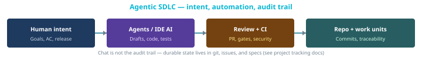

Agentic SDLC
Humans own intent; agents and CI amplify execution — still within Phases A–F and your tracking conventions.
Process overview
- Humans own product intent, acceptance criteria, ethics, and release; agents (IDE AI, bots) accelerate drafting, code, and tests under policy.
- Transparency: durable evidence lives in git, PRs, CI, and linked work-unit ids — not in chat transcripts alone.
- Higher velocity needs stronger gates (review, security, tests) so quality and traceability keep pace.

sdlc/TRACKING-*.md when present).Themes
- Human ownership of product intent, acceptance, and release
- Same lifecycle phases; higher change velocity requires stronger gates
- Optional
sdlc/TRACKING-*.mdin consuming repos for contributor → events → work units
External reading
What the link is and why this blueprint points to it—you can skip opening it if you already know the source.
- OWASP — Top 10 for LLM ApplicationsSecurity risks when LLMs touch design, code, or data—baseline for agentic / AI-assisted workflows.
Related
Read alongside Scrum, Kanban, and XP guides; cross-cutting risks in project TRACKING-CHALLENGES.md when present. For optional containerized recipes and agents/ layout (execution layer), see Agents & automation.
Full guide (canonical)
Authoritative depth, tables, and links live in Markdown: agentic-sdlc.md (in blueprints/sdlc/methodologies/).